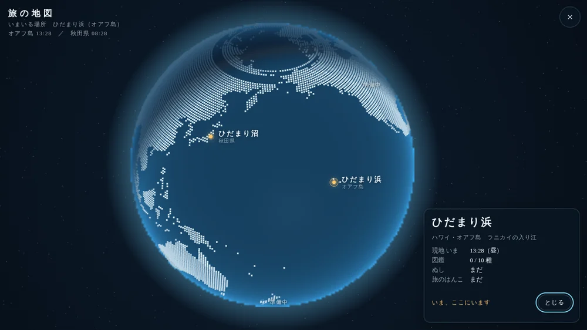

沼秋田県南部 湯沢のあたり
ひだまり沼
山あいの小さな沼。フナ、コイ、タナゴ、ナマズ。四季で景色も魚も変わり、ボートで沖の深みへも。となりには、釣り好きのおじいさん。
現地 いま
ひだまり沼のページへ →Hidamari seriesひだまりシリーズ
山あいの沼で、ぼんやり待つ。南の入り江で、波の音を聞く。
ゲームの中の旅の地図で、ふたつの釣り場を飛行機で行き来できます。
地球の明るいところと暗いところは、いまの実際の昼と夜です。
Fishing spots釣り場
沼秋田県南部 湯沢のあたり
山あいの小さな沼。フナ、コイ、タナゴ、ナマズ。四季で景色も魚も変わり、ボートで沖の深みへも。となりには、釣り好きのおじいさん。
現地 いま
ひだまり沼のページへ →浜ハワイ・オアフ島 ラニカイの入り江
澄んだ海に、サンゴと南の魚たち。潮が満ち引きし、波でウキがゆれます。釣った魚は、浜の水槽でずっと飼えます。ときどき、ウミガメも。
現地 いま
ひだまり浜のページへ →Travel map旅の地図
ゲームの右上の「地図」をひらくと、夜の地球儀。ピンをえらんで「出かける」と、紙飛行機が大円の上を飛びます。次の釣り場を読み込むあいだも、飛行機は飛びつづけ、着くと景色が円く開いて、日付入りの旅のはんこが押されます。

ひとつのゲームに、沼と浜の両方が入っています。はじめて開いたときに、どちらから始めるかをえらべます（2回目からは、前回の釣り場から）。
PC・スマホ・タブレットのブラウザで遊べます。ダウンロードは要りません。